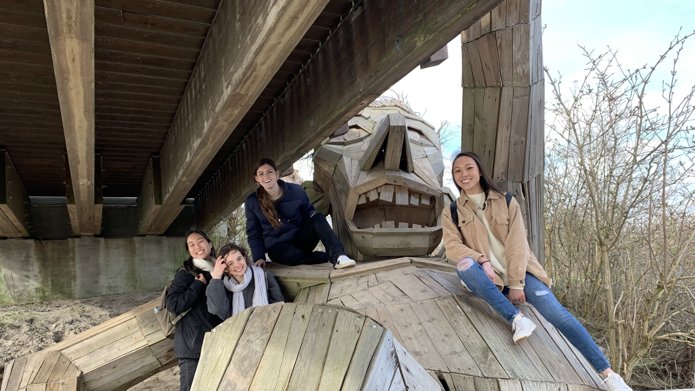

Danish Culture
Hygge

When walking around the streets of Copenhagen, it seems like every café, restaurant, or book store has a similar atmosphere that cannot quite be put into words (at least not words in the English language). There is a clear sense of coziness, with a plethora of blankets, pillows, candles, and tapestries welcoming strangers inside. But there is more to the feeling of walking into one of these establishments – the only thing I can compare it to is a sigh of relief or a feeling of home. As so many Danes are proud to explain, this phenomenon is aptly named “hygge,” a uniquely Danish concept, atmosphere, and way of life. While most of my fellow study abroad students identify and appreciate the presence of hygge in our new home country, there is no direct way to explain what we are experiencing to our friends back home.
Social Trust
As a foreigner, one of the most mind-boggling differences between the US and Denmark was the incredibly high level of social trust. In fact, this trust is so high that parents leave their babies in their strollers outside while they go in to a restaurant to eat a meal. While this would easily be considered child endangerment where I’m from, nobody thought twice about it in Copenhagen. Also, I could walk home by myself at midnight and not feel nervous at all – a feat that would never happen in the US. This social trust stems from the homogenous nature of Denmark and the incredible amount of pride the country takes in their history and society.

Biking

One of the first things I noticed when I moved to Copenhagen was the fact that very few people drove cars. There was no Uber or Lyft or Taxis driving around; instead, Danes rode their bikes every day to and from work, no matter the weather. When I first tried riding my own bike around the city, it was a completely overwhelming experience. While there are much fewer cars compared to the US, there are still some, and there are also plenty of large public transport busses. Depending on the part of town, busses, cars, and bikes could either all be using the same lanes, or they could each have their own (including three sets of stop lights at each intersection). I would imagine that people raised in Denmark would be used to the intricacies of biking through town, but even after my four months of pretending to be a Dane, I never fully got the hang of it.
Outdoor Living Learning Community
Weekly Trips

As a member of the Outdoor Living Learning Community, I was able to participate in weekly activities organized by our group leader, an avid outdoorsman named Anton. He planned awesome trips for our group of roughly 20 students, including a bike ride around the island of Amager, a fire-making class, an acro-yoga session, a parkour class, winter bathing in the freezing Danish waters, and camping for a weekend in the snow. Not only did I get to participate in these cool adventures, I also got to live with, and ultimately become friends and travel with, some really cool people that wanted to see the same outdoorsy places that I wanted to.